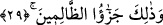
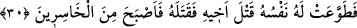

29- «Ben istiyorum ki, sen, hem benim günahımı hem de kendi günahını yüklenip
cehennemliklerden olasın; zâlimlerin cezâsı işte budur.»
“Ben istiyorum ki sen, hem benim günâhımı hem de kendi günâhını yüklenip” Bu,
Hâbil’in Kâbil’e karşı koymaktan imtinâ etmesinin diğer bir sebebidir. Önceki âyette
belirtilen sebep katilden öncesine, bu ise sonrasına âittir. Ancak bu sebeplerden her biri
tek başına yeterli olduğuna dikkat çekmek amacıyla birbirlerine atfedilmemiştir.
Mânâ şöyledir: Ben, sana karşı koymaktan kaçınıp sana teslim olmakla, sana el
uzatmış olmam durumunda yükleneceğim günah ile senin kendi günahını yüklenmeni
istiyorum. Nitekim Rasûlullah (s.a.v.) şöyle buyurmuştur: “Biribirine küfredenlerin
söylediklerinin günahı, mazlum olan haddi aşmadıkça başlayanadır.”[298] Yani ilk
başlayan hem kendi sövdüğünün günahını hem de karşısındakinin de sövmesine sebep
olduğu için onun günahını yüklenir. Yani, iki günaha da bulaşan ve onu taşıyan kişi
olasın diye, demektir.
Hâbil’in bu sözden maksadı, kardeşinin günaha bulaşmasını istemek değil, kendinin
günaha bulaşmak istemediğini ifâdedir.
Âhirette “cehennemliklerden olasın; zâlimlerin” yani Allah Teâlâ’nın hükmünü
kabul etmeyenlerin “cezâsı budur.”
30- Nihâyet nefsi onu, kardeşini öldürmeye itti ve onu öldürdü. Bu yüzden de
hüsrâna uğrayanlardan oldu.
“Nihâyet nefsi onu, kardeşini öldürmeye itti.” Yani nefsi ona, kardeşinin
öldürülmesini kolaylaştırdı, önemsiz ve basit gibi gösterdi. Sözün takdîri şöyledir:
Nefsi ona, kardeşinin öldürülmesini kolay, zahmetsiz ve mesuliyetsiz bir iş olarak tasvir
etti. Fakat bir kimsenin haksız yere bir insanı öldürmesi, özellikle de bu kardeşi olursa,
insan bunu düşündüğü takdirde yaptığı şeyin ne kadar menfûr, şerîat ve akıl dâiresinden
uzak olduğunu ve kesinlikle itâat ve inkıyaddan uzak olduğunu görebilir.
Nefs-i emmâre, yırtıcı öfke kuvvetini kullandığı zaman bu fiil ona çok basit gelir.
Sanki kendisine asi bir güç iken nefis onu itâatkâr bir kuvvet hâline dönüştürür.
“Ve onu öldürdü.” Denildiğine göre Kâbil, Hâbil’i nasıl öldüreceğini bilemedi. İblis
ona görünerek bir kuş veya bir yılanı alıp başını bir taşın üzerine koyduktan sonra diğer
bir taşla kafasını ezdi. Kâbil de ona bakarak öğrendi. Hâbil’in kafasını iki taşın arasına
koydu. Hâbil ona teslim olmuştu, karşı çıkmıyordu. Ya da koyunları otlarken o
uyuyordu. İşte bu esnâda ona hile yaptı. Bu hâdise, Sevr dağı veya Hira tepesi yâhut da